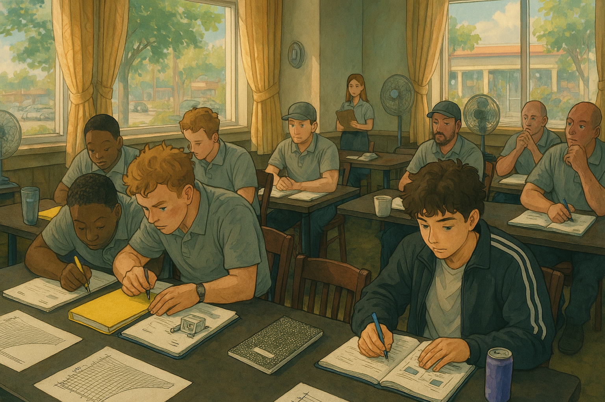

Welcome to My World
This website will be my go to place to post my thoughts. You can disagree or agree, doesn't change whether or not I post.
This website will be my go to place to post my thoughts. You can disagree or agree, doesn't change whether or not I post.
Last week, the company I work for - iMold - paid for us to take our WRT. We are locked into their company for a year unless we want to pay them back an overpriced amount of $500. But I get it, they wanted to invest in us to hopefully get profit back. I used gpt to create a photo in a ghibli inspired way.
